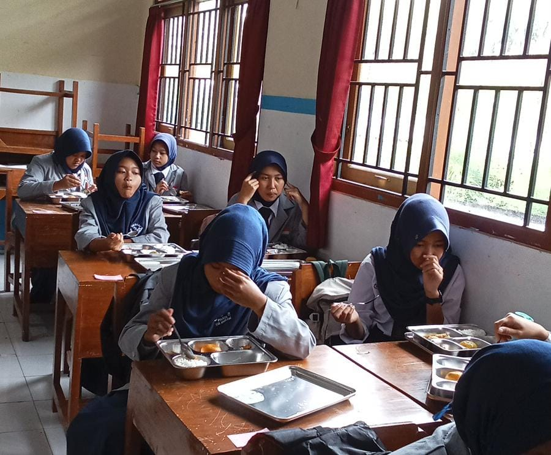

Makan Bergizi Gratis
Serunya Makan Bergizi Gratis Pertama di Sekolah
Hari ini, Senin 22 September 2025, sekolah kita punya kegiatan yang seru banget!
Untuk pertama kalinya, semua anak mendapat Makan Bergizi Gratis (MBG).
Sejak pagi, teman-teman sudah kelihatan gembira menunggu waktunya makan bersama.
Saat pelaksanaan, semua berjalan dengan tertib. Anak-anak berbaris dengan rapi, lalu menerima makanan yang sudah disiapkan.
Hebatnya, kurang dari 30 menit semua sudah selesai!
Wajah teman-teman terlihat ceria saat menikmati makanan bergizi itu.
Selain kenyang, kita juga jadi semakin semangat belajar.
Semoga program ini bisa terus berlanjut, supaya setiap hari kita tetap sehat, kuat, dan bahagia di sekolah.
